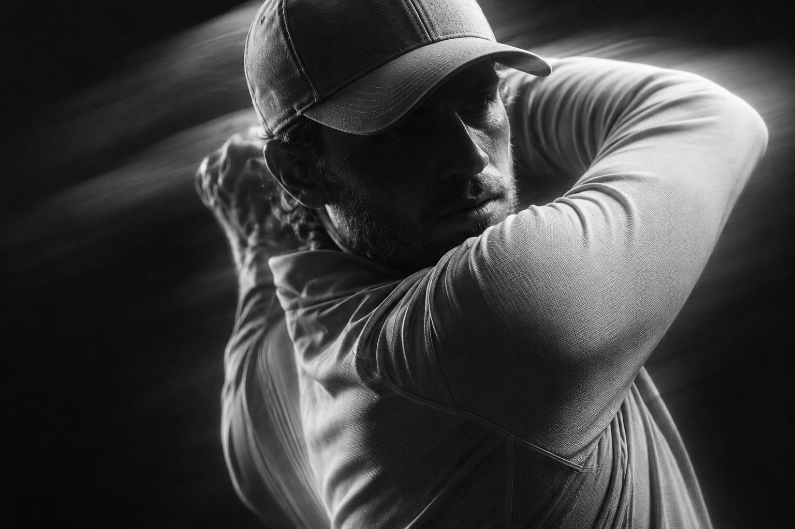
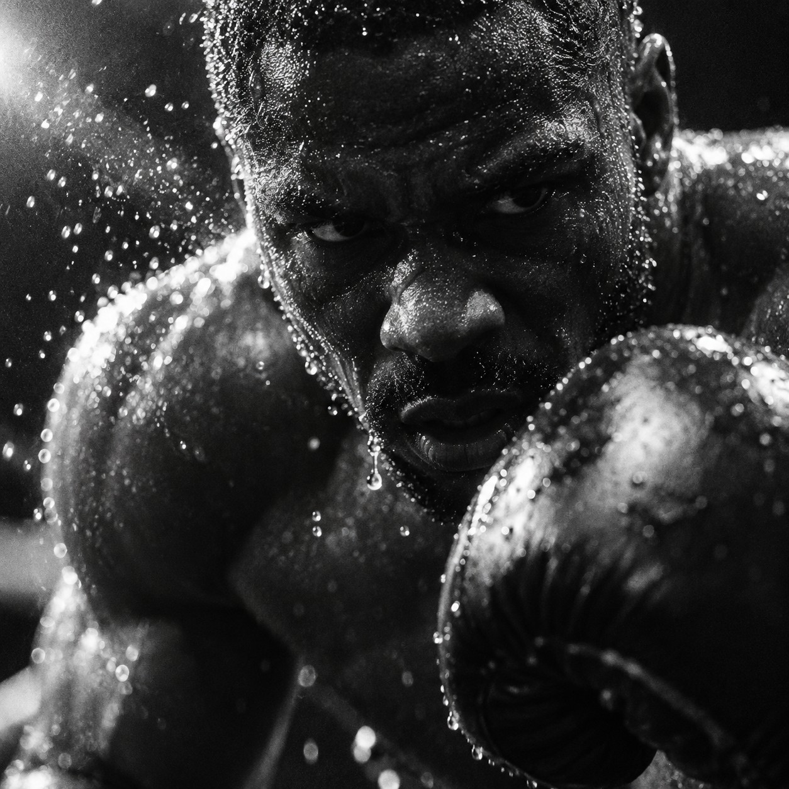
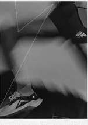
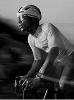
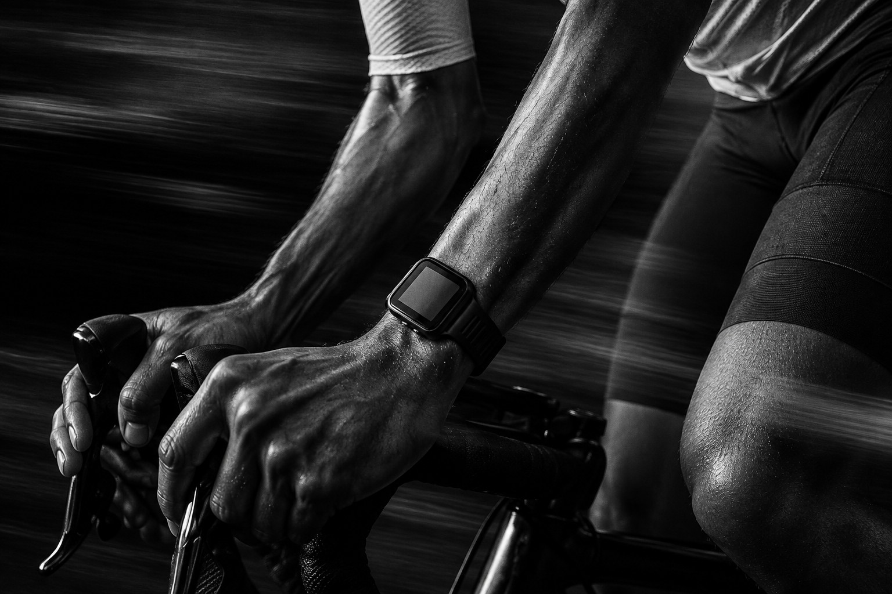

Our logo. The story of our brand.
At the heart of our brand, our logo takes center stage. Direct, purposeful, and unmistakable.
A mark built to move. A visual language that reflects the drive to keep showing up.
Less said. More done.


At the heart of our brand, our logo takes center stage. Direct, purposeful, and unmistakable.
A mark built to move. A visual language that reflects the drive to keep showing up.
Less said. More done.
Built for the moments that demand more. Designed for the people who give it.

Purpose in every detail. Form follows movement.
Keep what matters. Let everything else fall away.

Stay focused on the small, repeated effort. Choose to go again.

Precision meets persistence.
Made for the work you put in.